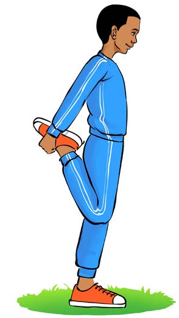

2.
Stretching the front of the thigh:
(a)
Stand on one leg and bend the other leg backward;
(b)
Hold the ankle of the lifted leg and pull it backward, as shown in Figure 3;
(c)
Hold it for 10 to 15 seconds; and
(d)
Change the leg and repeat the same steps.

Figure 3: A pupil stretching the thigh by holding one leg
3.
Stretching the back of the thigh:
(a)
Sit down with legs straight and extended,
(b)
Bend one leg,
(c)
Bend your body towards the stretched leg, as shown in Figure 4,
(d)
Hold for 10 to 15 seconds; and
(e)
Change the leg and repeat the same steps.